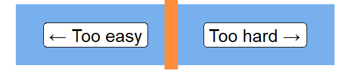
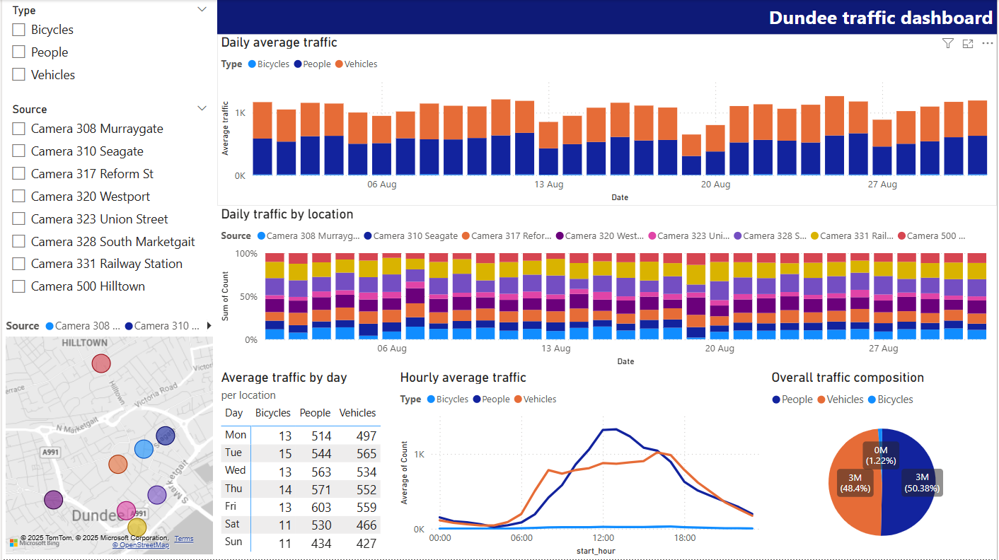
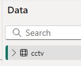
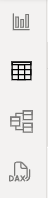

Intermediate Power BI (session 1)
Power BI
intermediate
Intermediate Power BI course
This is part of our intermediate-level Power BI desktop course. The course structure is as follows:
- session 1 (this session): a simple build-a-dashboard session as a warmup, reminder about core Power BI techniques, and sharing some suggestions for good workflow practices
- session 2: DAX language foundations, including FILTER and CALCULATE
- session 3: core PowerQuery functions to manage sources, join data sets, pivot, and tidy values
- session 4: PowerQuery M language foundations, including a basic overview of syntax, a core function toolkit, advanced mode, and reproducibility
- session 5: a second, more ambitious, build-a-dashboard session to put all that PowerQuery and DAX knowledge into practice
Session materials
Most of the data is taken directly from source, but there is one subsidiary dataset with CCTV camera locations. These are best-guesses about likely locations, and should be used purely for demonstration purposes.
Previous attendees have said…
- 78 previous attendees have left feedback
- 99% would recommend this session to a colleague
- 95% said that this session was pitched correctly

Three random comments from previous attendees
- Good to start with a quick refresher, also some new material. Looking forward to the rest of the sessions.
- Know basics of PowerBI but always handy to see other/new methods, Brendan always delivers great sessions and is adaptable to queries as the audience have different systems and experience, so always good to see variations due to versions.
- Really useful many thanks. Only 1 suggestion - at the break leave up the screen showing the dashboard for those of us (me!) who were still setting it up. That way I could see what I was setting up rather than attendees faces! Thanks again, Clive
Forthcoming session(s)
| Booking link | Date |
|---|---|
| Intermediate Power BI (session 1) | 13:00-15:00 Thu 15th January 2026 |
| Intermediate Power BI (session 1) | 10:00-12:00 Tue 28th April 2026 |
Session outline
- load some data
- wrangle it with PowerQuery
- write some DAX and think about the filter context
- build some visuals and assemble them into a dashboard
Session aim
- recap and reminder about core Power BI workflows 
Data
- CCTV data from Dundee
- hourly machine-classified counts of bikes, people, road vehicles
- preview
- download link: https://data.dundeecity.gov.uk/api/download/v1/items/90ce515ccc9a496f8f61c84d2eb01488/csv?layers=0
Please import the dataset into Power BI
Get data > From web- rename
csv?layers=0tocctv - then
Transform Data
PowerQuery reminder
- aimed at data wrangling
- the right place to do any one-off calculations and transformations
- reminder about terminology:
- query = dataset
- query steps = steps in wrangling from loading to final data
- PowerQuery M (PQM) language
Fix the dates
- split
[Hour]on “-”, then rename to give[start_hour]and[end_hour]cols - make sure
[Date]is a date, rather than a date/time - custom columns to make
[start_time]by appending with& [Date] & [start_hour]- duplicate and tweak to make
[end_time]
Rename and pivot the counts
- unpivot the three
Number_of_xxxcolumns - then replace values to remove
Number_of_to leaveBicycles,PeopleandVehicles - you could also tidy
Road vehicles - rename to
TypeandCount
Duplicate query
- just to see what happens
- then close and apply
New query in PowerQuery
- subsidiary data: CCTV camera locations data
- save and close back to Power BI
Relationships
- go to model view
- drag
dundee_cctv_locations[Source]tocctv[Source] - and cross-filter direction set to both
Sorting days
- still in model view, use DAX to make a
[weekday]column withweekday = WEEKDAY(cctv[Date], 2) - n.b. quirky return value argument
- then, in the model, sort
[Day]by[weekday]inProperties > Advanced
Date table
- Power BI does lots of helpful inference about dates
- e.g. the
.[Year],.[Month], etc values that pop up when writing functions about a date column in DAX
- e.g. the
- those work best when the dates are continuous. We have some missing data here, so we’ll add a proper date table
-
New Table, thendate_table = CALENDAR(min(cctv[Date]), max(cctv[Date]))- creates a row per day in the range of dates - we’ll talk more about date tables in the next session
DAX query view
This is a new way of building and testing DAX expressions without having to add them to your model/report. As of September 2025, it’s available to about 75% of staff in the network (from our informal polling). You might update your Power BI desktop if you’d like to try it. You can find it in the left-hand menu bar: 
-
EVALUATE()as a wrapper to any DAX expression, allowing you to run it in the DAX query view -
F5to run -
.[Year]syntax SUMMARIZECOLUMNS(group, name, expression)
Summary tables
- total counts by day, and by type
SUMMARIZECOLUMNS(cctv[Date].[Date], "Total count", SUM(cctv[Count]))SUMMARIZECOLUMNS(cctv[Type], "Total count", SUM(cctv[Count]))- please now translate each to new summary tables
Dashboard build out
Dashboard build out
- 2 x filters
- 1 x map
- 1 x header text box however you like
- 1 x column graph showing traffic by day: you should link the date table here to show missing data
- 1 x alluvial showing sites against time
- 1 x matrix showing days of the week and type and average count. Turn off subtotals, and
Format>General>Data formatto round values - 1 x pie showing type against count
- 1 x line showing diurnal change
Tidying
- sort out the values to make sure the cctv map links properly (especially for the Murraygate and Seagate cameras)